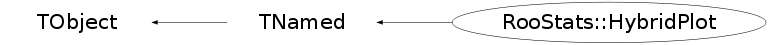

class RooStats::HybridPlot: public TNamed
Class HybridPlot Authors: D. Piparo, G. Schott - Universitaet Karlsruhe This class provides the plots for the result of a study performed with the HybridCalculator class. An example plot is available here: http://www-ekp.physik.uni-karlsruhe.de/~schott/roostats/hybridplot_example.png
Function Members (Methods)
public:
| virtual | ~HybridPlot() |
| void | TObject::AbstractMethod(const char* method) const |
| virtual void | TObject::AppendPad(Option_t* option = "") |
| virtual void | TObject::Browse(TBrowser* b) |
| static TClass* | Class() |
| virtual const char* | TObject::ClassName() const |
| virtual void | TNamed::Clear(Option_t* option = "") |
| virtual TObject* | TNamed::Clone(const char* newname = "") const |
| virtual Int_t | TNamed::Compare(const TObject* obj) const |
| virtual void | TNamed::Copy(TObject& named) const |
| virtual void | TObject::Delete(Option_t* option = "")MENU |
| virtual Int_t | TObject::DistancetoPrimitive(Int_t px, Int_t py) |
| virtual void | Draw(const char* options = "") |
| virtual void | TObject::DrawClass() constMENU |
| virtual TObject* | TObject::DrawClone(Option_t* option = "") constMENU |
| virtual void | TObject::Dump() constMENU |
| void | DumpToFile(const char* RootFileName, const char* options) |
| void | DumpToImage(const char* filename) |
| virtual void | TObject::Error(const char* method, const char* msgfmt) const |
| virtual void | TObject::Execute(const char* method, const char* params, Int_t* error = 0) |
| virtual void | TObject::Execute(TMethod* method, TObjArray* params, Int_t* error = 0) |
| virtual void | TObject::ExecuteEvent(Int_t event, Int_t px, Int_t py) |
| virtual void | TObject::Fatal(const char* method, const char* msgfmt) const |
| virtual void | TNamed::FillBuffer(char*& buffer) |
| virtual TObject* | TObject::FindObject(const char* name) const |
| virtual TObject* | TObject::FindObject(const TObject* obj) const |
| double | GetBCenter(double n_sigmas = 1, bool display = false) |
| TH1F* | GetBhisto() |
| double* | GetBIntExtremes(double frac) |
| double | GetBmean() |
| double | GetBrms() |
| TVirtualPad* | GetCanvas() |
| virtual Option_t* | TObject::GetDrawOption() const |
| static Long_t | TObject::GetDtorOnly() |
| double | GetHistoCenter(TH1* histo, double n_rms = 1, bool display_result = false) |
| double* | GetHistoPvals(TH1* histo, double percentage) |
| virtual const char* | TObject::GetIconName() const |
| double | GetMedian(TH1* histo) |
| virtual const char* | TNamed::GetName() const |
| virtual char* | TObject::GetObjectInfo(Int_t px, Int_t py) const |
| static Bool_t | TObject::GetObjectStat() |
| virtual Option_t* | TObject::GetOption() const |
| double | GetSBCenter(double n_sigmas = 1, bool display = false) |
| TH1F* | GetSBhisto() |
| double* | GetSBIntExtremes(double frac) |
| double | GetSBmean() |
| double | GetSBrms() |
| virtual const char* | TNamed::GetTitle() const |
| virtual UInt_t | TObject::GetUniqueID() const |
| virtual Bool_t | TObject::HandleTimer(TTimer* timer) |
| virtual ULong_t | TNamed::Hash() const |
| RooStats::HybridPlot | HybridPlot(const RooStats::HybridPlot&) |
| RooStats::HybridPlot | HybridPlot(const char* name, const char* title, const vector<double>& sb_values, const vector<double>& b_values, double testStat_data, int n_bins, bool verbosity = true) |
| virtual void | TObject::Info(const char* method, const char* msgfmt) const |
| virtual Bool_t | TObject::InheritsFrom(const char* classname) const |
| virtual Bool_t | TObject::InheritsFrom(const TClass* cl) const |
| virtual void | TObject::Inspect() constMENU |
| void | TObject::InvertBit(UInt_t f) |
| virtual TClass* | IsA() const |
| virtual Bool_t | TObject::IsEqual(const TObject* obj) const |
| virtual Bool_t | TObject::IsFolder() const |
| Bool_t | TObject::IsOnHeap() const |
| virtual Bool_t | TNamed::IsSortable() const |
| Bool_t | TObject::IsZombie() const |
| virtual void | TNamed::ls(Option_t* option = "") const |
| void | TObject::MayNotUse(const char* method) const |
| virtual Bool_t | TObject::Notify() |
| void | TObject::Obsolete(const char* method, const char* asOfVers, const char* removedFromVers) const |
| static void | TObject::operator delete(void* ptr) |
| static void | TObject::operator delete(void* ptr, void* vp) |
| static void | TObject::operator delete[](void* ptr) |
| static void | TObject::operator delete[](void* ptr, void* vp) |
| void* | TObject::operator new(size_t sz) |
| void* | TObject::operator new(size_t sz, void* vp) |
| void* | TObject::operator new[](size_t sz) |
| void* | TObject::operator new[](size_t sz, void* vp) |
| RooStats::HybridPlot& | operator=(const RooStats::HybridPlot&) |
| virtual void | TObject::Paint(Option_t* option = "") |
| virtual void | TObject::Pop() |
| virtual void | TNamed::Print(Option_t* option = "") const |
| virtual Int_t | TObject::Read(const char* name) |
| virtual void | TObject::RecursiveRemove(TObject* obj) |
| void | TObject::ResetBit(UInt_t f) |
| virtual void | TObject::SaveAs(const char* filename = "", Option_t* option = "") constMENU |
| virtual void | TObject::SavePrimitive(ostream& out, Option_t* option = "") |
| void | TObject::SetBit(UInt_t f) |
| void | TObject::SetBit(UInt_t f, Bool_t set) |
| virtual void | TObject::SetDrawOption(Option_t* option = "")MENU |
| static void | TObject::SetDtorOnly(void* obj) |
| virtual void | TNamed::SetName(const char* name)MENU |
| virtual void | TNamed::SetNameTitle(const char* name, const char* title) |
| static void | TObject::SetObjectStat(Bool_t stat) |
| virtual void | TNamed::SetTitle(const char* title = "")MENU |
| virtual void | TObject::SetUniqueID(UInt_t uid) |
| virtual void | ShowMembers(TMemberInspector& insp) |
| virtual Int_t | TNamed::Sizeof() const |
| virtual void | Streamer(TBuffer& b) |
| void | StreamerNVirtual(TBuffer& b) |
| virtual void | TObject::SysError(const char* method, const char* msgfmt) const |
| Bool_t | TObject::TestBit(UInt_t f) const |
| Int_t | TObject::TestBits(UInt_t f) const |
| virtual void | TObject::UseCurrentStyle() |
| virtual void | TObject::Warning(const char* method, const char* msgfmt) const |
| virtual Int_t | TObject::Write(const char* name = 0, Int_t option = 0, Int_t bufsize = 0) |
| virtual Int_t | TObject::Write(const char* name = 0, Int_t option = 0, Int_t bufsize = 0) const |
protected:
| virtual void | TObject::DoError(int level, const char* location, const char* fmt, va_list va) const |
| void | TObject::MakeZombie() |
Data Members
public:
| enum TObject::EStatusBits { | kCanDelete | |
| kMustCleanup | ||
| kObjInCanvas | ||
| kIsReferenced | ||
| kHasUUID | ||
| kCannotPick | ||
| kNoContextMenu | ||
| kInvalidObject | ||
| }; | ||
| enum TObject::[unnamed] { | kIsOnHeap | |
| kNotDeleted | ||
| kZombie | ||
| kBitMask | ||
| kSingleKey | ||
| kOverwrite | ||
| kWriteDelete | ||
| }; |
protected:
| TString | TNamed::fName | object identifier |
| TString | TNamed::fTitle | object title |
private:
| TH1F* | fB_histo | The b Histo |
| TH1F* | fB_histo_shaded | The b Histo shaded |
| TLine* | fData_testStat_line | The line for the data value of the test statistic |
| TLegend* | fLegend | The legend of the plot |
| TVirtualPad* | fPad | The pad where it has been drawn |
| TH1F* | fSb_histo | The sb Histo |
| TH1F* | fSb_histo_shaded | The sb Histo shaded |
| bool | fVerbose | verbosity flag |
Class Charts
{kind=link}
{kind=link}
{kind=link}
{kind=link}

Function documentation
HybridPlot(const char* name, const char* title, const vector<double>& sb_values, const vector<double>& b_values, double testStat_data, int n_bins, bool verbosity = true)
HybridPlot constructor
void DumpToFile(const char* RootFileName, const char* options)
All the objects are written to rootfile
void DumpToImage(const char* filename)
double GetHistoCenter(TH1* histo, double n_rms = 1, bool display_result = false)
Get the center of the histo
double* GetHistoPvals(TH1* histo, double percentage)
HybridPlot(const char* name, const char* title, const vector<double>& sb_values, const vector<double>& b_values, double testStat_data, int n_bins, bool verbosity = true)
Constructor
double GetBCenter(double n_sigmas = 1, bool display = false)
Get B histo center
{return GetHistoCenter(fB_histo,n_sigmas,display);}double* GetBIntExtremes(double frac)
Get B histo integration extremes to obtain the requested area fraction
{return GetHistoPvals(fB_histo,frac);}double GetSBCenter(double n_sigmas = 1, bool display = false)
Get SB histo center
{return GetHistoCenter(fSb_histo,n_sigmas,display);}double* GetSBIntExtremes(double frac)
Get SB histo integration extremes to obtain the requested area fraction
{return GetHistoPvals(fSb_histo,frac);}